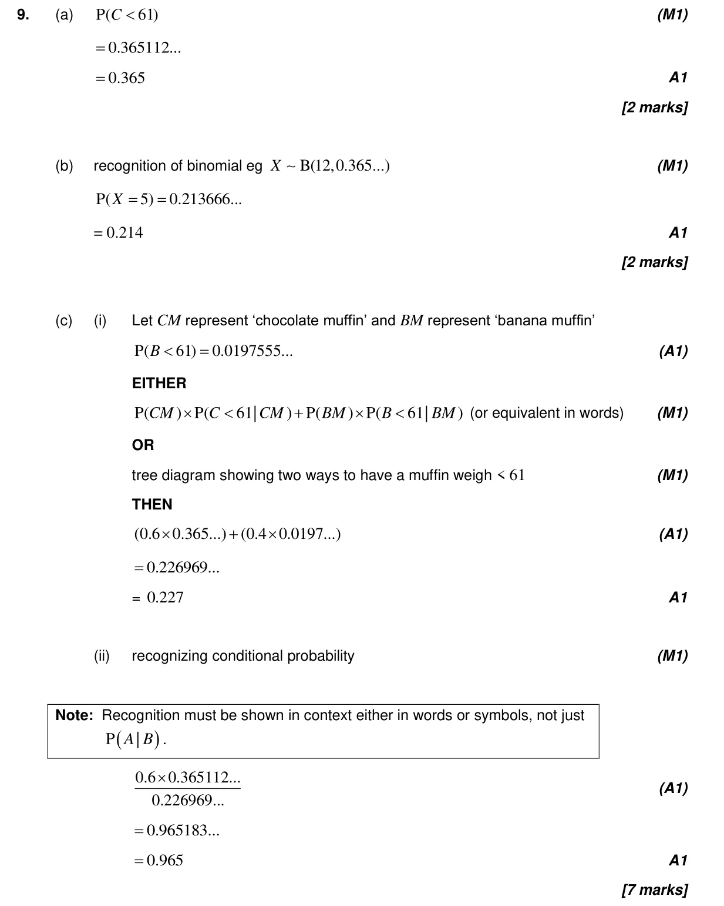
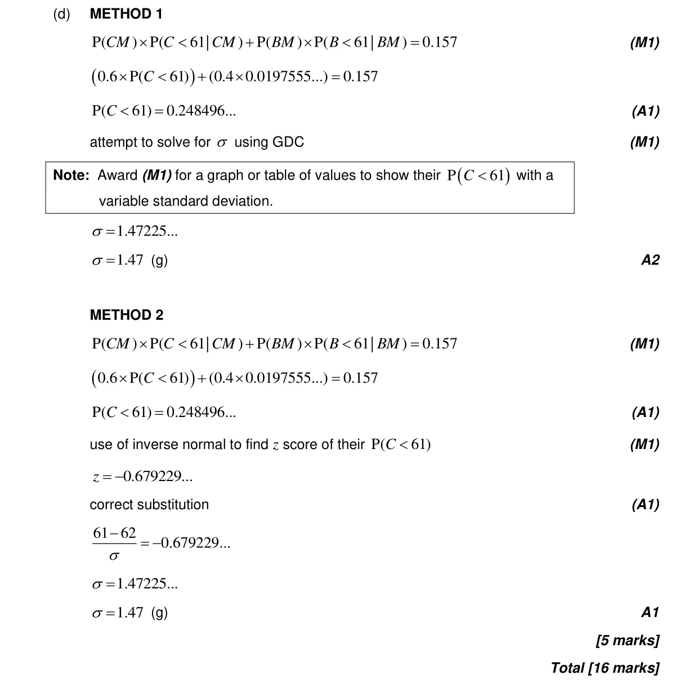

Appears in AA SL P2 Q9AA HL P2 Q11
4.6 Combined, mutually exclusive, conditional, independence and probability diagrams4.9 Normal distribution and calculations4.12 Standardization of normal variables4.11 Formal conditional probability and independence4.8 Binomial distribution
Question

Markscheme

